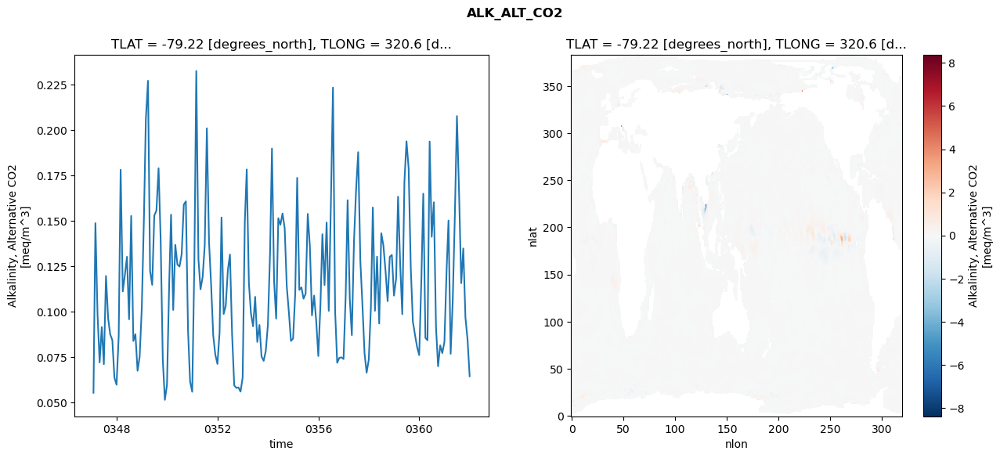
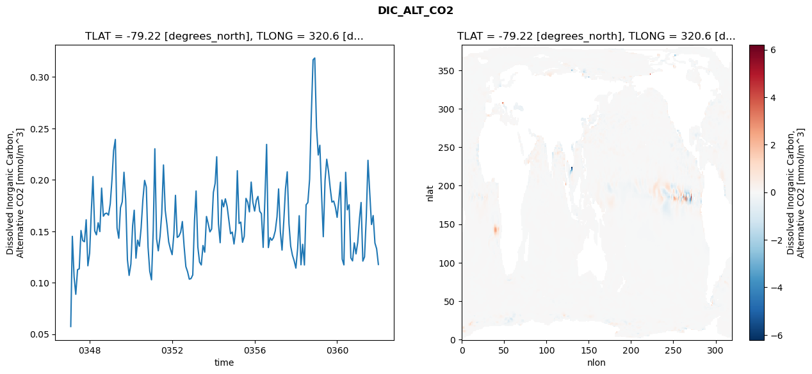
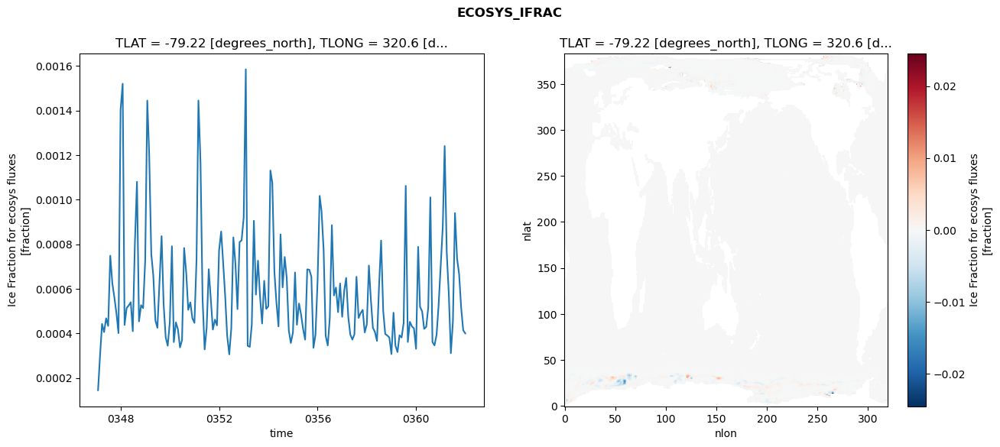
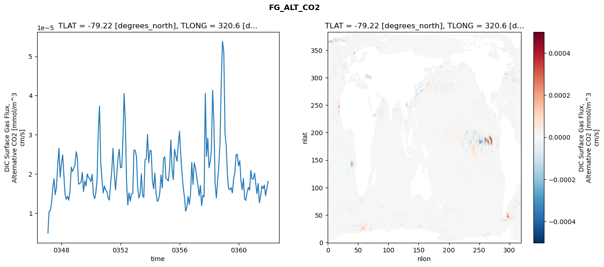

glb-dor_North_Atlantic_basin_016_1999-01-01_00064#
Simulation details#
Case: smyle.cdr-atlas-v0.glb-dor_North_Atlantic_basin_016_1999-01-01_00064.001
Basin: North_Atlantic_basin
Polygon: 16.0
Start date: 1999-01
Show code cell source Hide code cell source
import xarray as xr
import matplotlib.pyplot as plt
Show code cell source Hide code cell source
zarr_store = "/path/to/zarr/store"
# Parameters
zarr_store = "/global/cfs/projectdirs/m4746/Projects/Ocean-CDR-Atlas-v0/data/validation/smyle.cdr-atlas-v0.glb-dor_North_Atlantic_basin_016_1999-01-01_00064.001.validation.zarr"
Show code cell source Hide code cell source
%%time
ds_o = xr.open_zarr(zarr_store).compute()
ds_o
CPU times: user 705 ms, sys: 445 ms, total: 1.15 s
Wall time: 1.53 s
<xarray.Dataset> Size: 2MB
Dimensions: (nlat: 384, nlon: 320, time: 180)
Coordinates:
TLAT float64 8B -79.22
TLONG float64 8B 320.6
ULAT float64 8B -78.95
ULONG float64 8B 321.1
* time (time) object 1kB 0347-02-01 00:00:00 ... 0362-01-01 0...
z_t float32 4B 500.0
Dimensions without coordinates: nlat, nlon
Data variables:
ALK_ALT_CO2_diff (nlat, nlon) float32 492kB nan nan nan ... nan nan nan
ALK_ALT_CO2_rmse (time) float64 1kB 0.05547 0.1487 ... 0.08503 0.06452
DIC_ALT_CO2_diff (nlat, nlon) float32 492kB nan nan nan ... nan nan nan
DIC_ALT_CO2_rmse (time) float64 1kB 0.05745 0.1451 0.1055 ... 0.133 0.1177
ECOSYS_IFRAC_diff (nlat, nlon) float32 492kB nan nan nan ... nan nan nan
ECOSYS_IFRAC_rmse (time) float64 1kB 0.0001449 0.0002933 ... 0.0004
FG_ALT_CO2_diff (nlat, nlon) float32 492kB nan nan nan ... nan nan nan
FG_ALT_CO2_rmse (time) float64 1kB 4.874e-06 1.042e-05 ... 1.809e-05xarray.Dataset
- nlat: 384
- nlon: 320
- time: 180
- TLAT()float64-79.22
- long_name :
- array of t-grid latitudes
- units :
- degrees_north
array(-79.22052261)
- TLONG()float64320.6
- long_name :
- array of t-grid longitudes
- units :
- degrees_east
array(320.56250892)
- ULAT()float64-78.95
- long_name :
- array of u-grid latitudes
- units :
- degrees_north
array(-78.95289509)
- ULONG()float64321.1
- long_name :
- array of u-grid longitudes
- units :
- degrees_east
array(321.12500894)
- time(time)object0347-02-01 00:00:00 ... 0362-01-...
- bounds :
- time_bound
- long_name :
- time
array([cftime.DatetimeNoLeap(347, 2, 1, 0, 0, 0, 0, has_year_zero=True), cftime.DatetimeNoLeap(347, 3, 1, 0, 0, 0, 0, has_year_zero=True), cftime.DatetimeNoLeap(347, 4, 1, 0, 0, 0, 0, has_year_zero=True), cftime.DatetimeNoLeap(347, 5, 1, 0, 0, 0, 0, has_year_zero=True), cftime.DatetimeNoLeap(347, 6, 1, 0, 0, 0, 0, has_year_zero=True), cftime.DatetimeNoLeap(347, 7, 1, 0, 0, 0, 0, has_year_zero=True), cftime.DatetimeNoLeap(347, 8, 1, 0, 0, 0, 0, has_year_zero=True), cftime.DatetimeNoLeap(347, 9, 1, 0, 0, 0, 0, has_year_zero=True), cftime.DatetimeNoLeap(347, 10, 1, 0, 0, 0, 0, has_year_zero=True), cftime.DatetimeNoLeap(347, 11, 1, 0, 0, 0, 0, has_year_zero=True), cftime.DatetimeNoLeap(347, 12, 1, 0, 0, 0, 0, has_year_zero=True), cftime.DatetimeNoLeap(348, 1, 1, 0, 0, 0, 0, has_year_zero=True), cftime.DatetimeNoLeap(348, 2, 1, 0, 0, 0, 0, has_year_zero=True), cftime.DatetimeNoLeap(348, 3, 1, 0, 0, 0, 0, has_year_zero=True), cftime.DatetimeNoLeap(348, 4, 1, 0, 0, 0, 0, has_year_zero=True), cftime.DatetimeNoLeap(348, 5, 1, 0, 0, 0, 0, has_year_zero=True), cftime.DatetimeNoLeap(348, 6, 1, 0, 0, 0, 0, has_year_zero=True), cftime.DatetimeNoLeap(348, 7, 1, 0, 0, 0, 0, has_year_zero=True), cftime.DatetimeNoLeap(348, 8, 1, 0, 0, 0, 0, has_year_zero=True), cftime.DatetimeNoLeap(348, 9, 1, 0, 0, 0, 0, has_year_zero=True), cftime.DatetimeNoLeap(348, 10, 1, 0, 0, 0, 0, has_year_zero=True), cftime.DatetimeNoLeap(348, 11, 1, 0, 0, 0, 0, has_year_zero=True), cftime.DatetimeNoLeap(348, 12, 1, 0, 0, 0, 0, has_year_zero=True), cftime.DatetimeNoLeap(349, 1, 1, 0, 0, 0, 0, has_year_zero=True), cftime.DatetimeNoLeap(349, 2, 1, 0, 0, 0, 0, has_year_zero=True), cftime.DatetimeNoLeap(349, 3, 1, 0, 0, 0, 0, has_year_zero=True), cftime.DatetimeNoLeap(349, 4, 1, 0, 0, 0, 0, has_year_zero=True), cftime.DatetimeNoLeap(349, 5, 1, 0, 0, 0, 0, has_year_zero=True), cftime.DatetimeNoLeap(349, 6, 1, 0, 0, 0, 0, has_year_zero=True), cftime.DatetimeNoLeap(349, 7, 1, 0, 0, 0, 0, has_year_zero=True), cftime.DatetimeNoLeap(349, 8, 1, 0, 0, 0, 0, has_year_zero=True), cftime.DatetimeNoLeap(349, 9, 1, 0, 0, 0, 0, has_year_zero=True), cftime.DatetimeNoLeap(349, 10, 1, 0, 0, 0, 0, has_year_zero=True), cftime.DatetimeNoLeap(349, 11, 1, 0, 0, 0, 0, has_year_zero=True), cftime.DatetimeNoLeap(349, 12, 1, 0, 0, 0, 0, has_year_zero=True), cftime.DatetimeNoLeap(350, 1, 1, 0, 0, 0, 0, has_year_zero=True), cftime.DatetimeNoLeap(350, 2, 1, 0, 0, 0, 0, has_year_zero=True), cftime.DatetimeNoLeap(350, 3, 1, 0, 0, 0, 0, has_year_zero=True), cftime.DatetimeNoLeap(350, 4, 1, 0, 0, 0, 0, has_year_zero=True), cftime.DatetimeNoLeap(350, 5, 1, 0, 0, 0, 0, has_year_zero=True), cftime.DatetimeNoLeap(350, 6, 1, 0, 0, 0, 0, has_year_zero=True), cftime.DatetimeNoLeap(350, 7, 1, 0, 0, 0, 0, has_year_zero=True), cftime.DatetimeNoLeap(350, 8, 1, 0, 0, 0, 0, has_year_zero=True), cftime.DatetimeNoLeap(350, 9, 1, 0, 0, 0, 0, has_year_zero=True), cftime.DatetimeNoLeap(350, 10, 1, 0, 0, 0, 0, has_year_zero=True), cftime.DatetimeNoLeap(350, 11, 1, 0, 0, 0, 0, has_year_zero=True), cftime.DatetimeNoLeap(350, 12, 1, 0, 0, 0, 0, has_year_zero=True), cftime.DatetimeNoLeap(351, 1, 1, 0, 0, 0, 0, has_year_zero=True), cftime.DatetimeNoLeap(351, 2, 1, 0, 0, 0, 0, has_year_zero=True), cftime.DatetimeNoLeap(351, 3, 1, 0, 0, 0, 0, has_year_zero=True), cftime.DatetimeNoLeap(351, 4, 1, 0, 0, 0, 0, has_year_zero=True), cftime.DatetimeNoLeap(351, 5, 1, 0, 0, 0, 0, has_year_zero=True), cftime.DatetimeNoLeap(351, 6, 1, 0, 0, 0, 0, has_year_zero=True), cftime.DatetimeNoLeap(351, 7, 1, 0, 0, 0, 0, has_year_zero=True), cftime.DatetimeNoLeap(351, 8, 1, 0, 0, 0, 0, has_year_zero=True), cftime.DatetimeNoLeap(351, 9, 1, 0, 0, 0, 0, has_year_zero=True), cftime.DatetimeNoLeap(351, 10, 1, 0, 0, 0, 0, has_year_zero=True), cftime.DatetimeNoLeap(351, 11, 1, 0, 0, 0, 0, has_year_zero=True), cftime.DatetimeNoLeap(351, 12, 1, 0, 0, 0, 0, has_year_zero=True), cftime.DatetimeNoLeap(352, 1, 1, 0, 0, 0, 0, has_year_zero=True), cftime.DatetimeNoLeap(352, 2, 1, 0, 0, 0, 0, has_year_zero=True), cftime.DatetimeNoLeap(352, 3, 1, 0, 0, 0, 0, has_year_zero=True), cftime.DatetimeNoLeap(352, 4, 1, 0, 0, 0, 0, has_year_zero=True), cftime.DatetimeNoLeap(352, 5, 1, 0, 0, 0, 0, has_year_zero=True), cftime.DatetimeNoLeap(352, 6, 1, 0, 0, 0, 0, has_year_zero=True), cftime.DatetimeNoLeap(352, 7, 1, 0, 0, 0, 0, has_year_zero=True), cftime.DatetimeNoLeap(352, 8, 1, 0, 0, 0, 0, has_year_zero=True), cftime.DatetimeNoLeap(352, 9, 1, 0, 0, 0, 0, has_year_zero=True), cftime.DatetimeNoLeap(352, 10, 1, 0, 0, 0, 0, has_year_zero=True), cftime.DatetimeNoLeap(352, 11, 1, 0, 0, 0, 0, has_year_zero=True), cftime.DatetimeNoLeap(352, 12, 1, 0, 0, 0, 0, has_year_zero=True), cftime.DatetimeNoLeap(353, 1, 1, 0, 0, 0, 0, has_year_zero=True), cftime.DatetimeNoLeap(353, 2, 1, 0, 0, 0, 0, has_year_zero=True), cftime.DatetimeNoLeap(353, 3, 1, 0, 0, 0, 0, has_year_zero=True), cftime.DatetimeNoLeap(353, 4, 1, 0, 0, 0, 0, has_year_zero=True), cftime.DatetimeNoLeap(353, 5, 1, 0, 0, 0, 0, has_year_zero=True), cftime.DatetimeNoLeap(353, 6, 1, 0, 0, 0, 0, has_year_zero=True), cftime.DatetimeNoLeap(353, 7, 1, 0, 0, 0, 0, has_year_zero=True), cftime.DatetimeNoLeap(353, 8, 1, 0, 0, 0, 0, has_year_zero=True), cftime.DatetimeNoLeap(353, 9, 1, 0, 0, 0, 0, has_year_zero=True), cftime.DatetimeNoLeap(353, 10, 1, 0, 0, 0, 0, has_year_zero=True), cftime.DatetimeNoLeap(353, 11, 1, 0, 0, 0, 0, has_year_zero=True), cftime.DatetimeNoLeap(353, 12, 1, 0, 0, 0, 0, has_year_zero=True), cftime.DatetimeNoLeap(354, 1, 1, 0, 0, 0, 0, has_year_zero=True), cftime.DatetimeNoLeap(354, 2, 1, 0, 0, 0, 0, has_year_zero=True), cftime.DatetimeNoLeap(354, 3, 1, 0, 0, 0, 0, has_year_zero=True), cftime.DatetimeNoLeap(354, 4, 1, 0, 0, 0, 0, has_year_zero=True), cftime.DatetimeNoLeap(354, 5, 1, 0, 0, 0, 0, has_year_zero=True), cftime.DatetimeNoLeap(354, 6, 1, 0, 0, 0, 0, has_year_zero=True), cftime.DatetimeNoLeap(354, 7, 1, 0, 0, 0, 0, has_year_zero=True), cftime.DatetimeNoLeap(354, 8, 1, 0, 0, 0, 0, has_year_zero=True), cftime.DatetimeNoLeap(354, 9, 1, 0, 0, 0, 0, has_year_zero=True), cftime.DatetimeNoLeap(354, 10, 1, 0, 0, 0, 0, has_year_zero=True), cftime.DatetimeNoLeap(354, 11, 1, 0, 0, 0, 0, has_year_zero=True), cftime.DatetimeNoLeap(354, 12, 1, 0, 0, 0, 0, has_year_zero=True), cftime.DatetimeNoLeap(355, 1, 1, 0, 0, 0, 0, has_year_zero=True), cftime.DatetimeNoLeap(355, 2, 1, 0, 0, 0, 0, has_year_zero=True), cftime.DatetimeNoLeap(355, 3, 1, 0, 0, 0, 0, has_year_zero=True), cftime.DatetimeNoLeap(355, 4, 1, 0, 0, 0, 0, has_year_zero=True), cftime.DatetimeNoLeap(355, 5, 1, 0, 0, 0, 0, has_year_zero=True), cftime.DatetimeNoLeap(355, 6, 1, 0, 0, 0, 0, has_year_zero=True), cftime.DatetimeNoLeap(355, 7, 1, 0, 0, 0, 0, has_year_zero=True), cftime.DatetimeNoLeap(355, 8, 1, 0, 0, 0, 0, has_year_zero=True), cftime.DatetimeNoLeap(355, 9, 1, 0, 0, 0, 0, has_year_zero=True), cftime.DatetimeNoLeap(355, 10, 1, 0, 0, 0, 0, has_year_zero=True), cftime.DatetimeNoLeap(355, 11, 1, 0, 0, 0, 0, has_year_zero=True), cftime.DatetimeNoLeap(355, 12, 1, 0, 0, 0, 0, has_year_zero=True), cftime.DatetimeNoLeap(356, 1, 1, 0, 0, 0, 0, has_year_zero=True), cftime.DatetimeNoLeap(356, 2, 1, 0, 0, 0, 0, has_year_zero=True), cftime.DatetimeNoLeap(356, 3, 1, 0, 0, 0, 0, has_year_zero=True), cftime.DatetimeNoLeap(356, 4, 1, 0, 0, 0, 0, has_year_zero=True), cftime.DatetimeNoLeap(356, 5, 1, 0, 0, 0, 0, has_year_zero=True), cftime.DatetimeNoLeap(356, 6, 1, 0, 0, 0, 0, has_year_zero=True), cftime.DatetimeNoLeap(356, 7, 1, 0, 0, 0, 0, has_year_zero=True), cftime.DatetimeNoLeap(356, 8, 1, 0, 0, 0, 0, has_year_zero=True), cftime.DatetimeNoLeap(356, 9, 1, 0, 0, 0, 0, has_year_zero=True), cftime.DatetimeNoLeap(356, 10, 1, 0, 0, 0, 0, has_year_zero=True), cftime.DatetimeNoLeap(356, 11, 1, 0, 0, 0, 0, has_year_zero=True), cftime.DatetimeNoLeap(356, 12, 1, 0, 0, 0, 0, has_year_zero=True), cftime.DatetimeNoLeap(357, 1, 1, 0, 0, 0, 0, has_year_zero=True), cftime.DatetimeNoLeap(357, 2, 1, 0, 0, 0, 0, has_year_zero=True), cftime.DatetimeNoLeap(357, 3, 1, 0, 0, 0, 0, has_year_zero=True), cftime.DatetimeNoLeap(357, 4, 1, 0, 0, 0, 0, has_year_zero=True), cftime.DatetimeNoLeap(357, 5, 1, 0, 0, 0, 0, has_year_zero=True), cftime.DatetimeNoLeap(357, 6, 1, 0, 0, 0, 0, has_year_zero=True), cftime.DatetimeNoLeap(357, 7, 1, 0, 0, 0, 0, has_year_zero=True), cftime.DatetimeNoLeap(357, 8, 1, 0, 0, 0, 0, has_year_zero=True), cftime.DatetimeNoLeap(357, 9, 1, 0, 0, 0, 0, has_year_zero=True), cftime.DatetimeNoLeap(357, 10, 1, 0, 0, 0, 0, has_year_zero=True), cftime.DatetimeNoLeap(357, 11, 1, 0, 0, 0, 0, has_year_zero=True), cftime.DatetimeNoLeap(357, 12, 1, 0, 0, 0, 0, has_year_zero=True), cftime.DatetimeNoLeap(358, 1, 1, 0, 0, 0, 0, has_year_zero=True), cftime.DatetimeNoLeap(358, 2, 1, 0, 0, 0, 0, has_year_zero=True), cftime.DatetimeNoLeap(358, 3, 1, 0, 0, 0, 0, has_year_zero=True), cftime.DatetimeNoLeap(358, 4, 1, 0, 0, 0, 0, has_year_zero=True), cftime.DatetimeNoLeap(358, 5, 1, 0, 0, 0, 0, has_year_zero=True), cftime.DatetimeNoLeap(358, 6, 1, 0, 0, 0, 0, has_year_zero=True), cftime.DatetimeNoLeap(358, 7, 1, 0, 0, 0, 0, has_year_zero=True), cftime.DatetimeNoLeap(358, 8, 1, 0, 0, 0, 0, has_year_zero=True), cftime.DatetimeNoLeap(358, 9, 1, 0, 0, 0, 0, has_year_zero=True), cftime.DatetimeNoLeap(358, 10, 1, 0, 0, 0, 0, has_year_zero=True), cftime.DatetimeNoLeap(358, 11, 1, 0, 0, 0, 0, has_year_zero=True), cftime.DatetimeNoLeap(358, 12, 1, 0, 0, 0, 0, has_year_zero=True), cftime.DatetimeNoLeap(359, 1, 1, 0, 0, 0, 0, has_year_zero=True), cftime.DatetimeNoLeap(359, 2, 1, 0, 0, 0, 0, has_year_zero=True), cftime.DatetimeNoLeap(359, 3, 1, 0, 0, 0, 0, has_year_zero=True), cftime.DatetimeNoLeap(359, 4, 1, 0, 0, 0, 0, has_year_zero=True), cftime.DatetimeNoLeap(359, 5, 1, 0, 0, 0, 0, has_year_zero=True), cftime.DatetimeNoLeap(359, 6, 1, 0, 0, 0, 0, has_year_zero=True), cftime.DatetimeNoLeap(359, 7, 1, 0, 0, 0, 0, has_year_zero=True), cftime.DatetimeNoLeap(359, 8, 1, 0, 0, 0, 0, has_year_zero=True), cftime.DatetimeNoLeap(359, 9, 1, 0, 0, 0, 0, has_year_zero=True), cftime.DatetimeNoLeap(359, 10, 1, 0, 0, 0, 0, has_year_zero=True), cftime.DatetimeNoLeap(359, 11, 1, 0, 0, 0, 0, has_year_zero=True), cftime.DatetimeNoLeap(359, 12, 1, 0, 0, 0, 0, has_year_zero=True), cftime.DatetimeNoLeap(360, 1, 1, 0, 0, 0, 0, has_year_zero=True), cftime.DatetimeNoLeap(360, 2, 1, 0, 0, 0, 0, has_year_zero=True), cftime.DatetimeNoLeap(360, 3, 1, 0, 0, 0, 0, has_year_zero=True), cftime.DatetimeNoLeap(360, 4, 1, 0, 0, 0, 0, has_year_zero=True), cftime.DatetimeNoLeap(360, 5, 1, 0, 0, 0, 0, has_year_zero=True), cftime.DatetimeNoLeap(360, 6, 1, 0, 0, 0, 0, has_year_zero=True), cftime.DatetimeNoLeap(360, 7, 1, 0, 0, 0, 0, has_year_zero=True), cftime.DatetimeNoLeap(360, 8, 1, 0, 0, 0, 0, has_year_zero=True), cftime.DatetimeNoLeap(360, 9, 1, 0, 0, 0, 0, has_year_zero=True), cftime.DatetimeNoLeap(360, 10, 1, 0, 0, 0, 0, has_year_zero=True), cftime.DatetimeNoLeap(360, 11, 1, 0, 0, 0, 0, has_year_zero=True), cftime.DatetimeNoLeap(360, 12, 1, 0, 0, 0, 0, has_year_zero=True), cftime.DatetimeNoLeap(361, 1, 1, 0, 0, 0, 0, has_year_zero=True), cftime.DatetimeNoLeap(361, 2, 1, 0, 0, 0, 0, has_year_zero=True), cftime.DatetimeNoLeap(361, 3, 1, 0, 0, 0, 0, has_year_zero=True), cftime.DatetimeNoLeap(361, 4, 1, 0, 0, 0, 0, has_year_zero=True), cftime.DatetimeNoLeap(361, 5, 1, 0, 0, 0, 0, has_year_zero=True), cftime.DatetimeNoLeap(361, 6, 1, 0, 0, 0, 0, has_year_zero=True), cftime.DatetimeNoLeap(361, 7, 1, 0, 0, 0, 0, has_year_zero=True), cftime.DatetimeNoLeap(361, 8, 1, 0, 0, 0, 0, has_year_zero=True), cftime.DatetimeNoLeap(361, 9, 1, 0, 0, 0, 0, has_year_zero=True), cftime.DatetimeNoLeap(361, 10, 1, 0, 0, 0, 0, has_year_zero=True), cftime.DatetimeNoLeap(361, 11, 1, 0, 0, 0, 0, has_year_zero=True), cftime.DatetimeNoLeap(361, 12, 1, 0, 0, 0, 0, has_year_zero=True), cftime.DatetimeNoLeap(362, 1, 1, 0, 0, 0, 0, has_year_zero=True)], dtype=object) - z_t()float32500.0
- long_name :
- depth from surface to midpoint of layer
- positive :
- down
- units :
- centimeters
- valid_max :
- 537500.0
- valid_min :
- 500.0
array(500., dtype=float32)
- ALK_ALT_CO2_diff(nlat, nlon)float32nan nan nan nan ... nan nan nan nan
- cell_methods :
- time: mean
- grid_loc :
- 3111
- long_name :
- Alkalinity, Alternative CO2
- units :
- meq/m^3
array([[ nan, nan, nan, ..., nan, nan, nan], [ nan, nan, nan, ..., nan, nan, nan], [ 0.03027344, 0.00292969, -0.00561523, ..., nan, nan, nan], ..., [ nan, nan, nan, ..., nan, nan, nan], [ nan, nan, nan, ..., nan, nan, nan], [ nan, nan, nan, ..., nan, nan, nan]], dtype=float32) - ALK_ALT_CO2_rmse(time)float640.05547 0.1487 ... 0.08503 0.06452
- cell_methods :
- time: mean
- grid_loc :
- 3111
- long_name :
- Alkalinity, Alternative CO2
- units :
- meq/m^3
array([0.05547016, 0.14874342, 0.09821838, 0.07212162, 0.09161372, 0.07115373, 0.11971647, 0.09642512, 0.08759776, 0.08441216, 0.06379296, 0.05989867, 0.08659344, 0.1781333 , 0.11124424, 0.12015801, 0.13025512, 0.09588073, 0.15275514, 0.08396777, 0.08767996, 0.06757981, 0.07515265, 0.10192645, 0.15148856, 0.20618708, 0.22708667, 0.12258464, 0.11482558, 0.15286078, 0.15575758, 0.17898402, 0.1400476 , 0.07385195, 0.05157387, 0.05987992, 0.11449541, 0.1534484 , 0.10102628, 0.13683022, 0.12598016, 0.12489934, 0.13157975, 0.15895763, 0.1607648 , 0.09019723, 0.06164365, 0.0560147 , 0.12706193, 0.23243771, 0.12898188, 0.1123814 , 0.11917477, 0.13656337, 0.2009202 , 0.13857838, 0.11537076, 0.08703342, 0.07647034, 0.07134804, 0.08877703, 0.15189001, 0.09882779, 0.10332184, 0.12303073, 0.13150103, 0.08773542, 0.05956523, 0.05812602, 0.05839853, 0.05609265, 0.06385472, 0.14932456, 0.17831318, 0.11581787, 0.09909671, 0.09200881, 0.10824059, 0.08342301, 0.09275427, 0.07547209, 0.07303154, 0.07835646, 0.09276906, 0.13178225, 0.18981217, 0.11674434, 0.09624045, 0.15150918, 0.14785525, 0.15406958, 0.14606397, 0.11416833, 0.09958033, 0.08396238, 0.08533485, 0.110431 , 0.17369384, 0.1120493 , 0.11345204, 0.10721485, 0.10995332, 0.1538512 , 0.13574762, 0.0980264 , 0.10892272, 0.09514906, 0.07567631, 0.10415745, 0.14267667, 0.11472831, 0.14913739, 0.10054016, 0.15795756, 0.22333647, 0.10061528, 0.07195232, 0.07467057, 0.07494597, 0.07403155, 0.10913182, 0.16140171, 0.10737885, 0.0871846 , 0.13866019, 0.16675355, 0.1878318 , 0.12817365, 0.10408285, 0.07710816, 0.06650058, 0.07363925, 0.10260706, 0.15739388, 0.10056421, 0.13035746, 0.09354057, 0.14321765, 0.13640575, 0.12230084, 0.10585427, 0.13024302, 0.13129825, 0.10891277, 0.11832877, 0.16331305, 0.12574311, 0.0986887 , 0.17145297, 0.1937915 , 0.17895607, 0.12401714, 0.09471218, 0.0873284 , 0.08070912, 0.07619809, 0.11741576, 0.16500395, 0.08565742, 0.08436844, 0.19365427, 0.14126933, 0.1602346 , 0.09158928, 0.07001174, 0.08156057, 0.07728979, 0.08340539, 0.1226303 , 0.1502207 , 0.07691582, 0.10581027, 0.15313217, 0.20766186, 0.16529259, 0.11574226, 0.13485709, 0.09684479, 0.08503455, 0.06452343]) - DIC_ALT_CO2_diff(nlat, nlon)float32nan nan nan nan ... nan nan nan nan
- cell_methods :
- time: mean
- grid_loc :
- 3111
- long_name :
- Dissolved Inorganic Carbon, Alternative CO2
- units :
- mmol/m^3
array([[ nan, nan, nan, ..., nan, nan, nan], [ nan, nan, nan, ..., nan, nan, nan], [0.0378418 , 0.00708008, 0.00317383, ..., nan, nan, nan], ..., [ nan, nan, nan, ..., nan, nan, nan], [ nan, nan, nan, ..., nan, nan, nan], [ nan, nan, nan, ..., nan, nan, nan]], dtype=float32) - DIC_ALT_CO2_rmse(time)float640.05745 0.1451 ... 0.133 0.1177
- cell_methods :
- time: mean
- grid_loc :
- 3111
- long_name :
- Dissolved Inorganic Carbon, Alternative CO2
- units :
- mmol/m^3
array([0.0574527 , 0.14507737, 0.10551524, 0.08876009, 0.11267304, 0.11351854, 0.15074451, 0.14088796, 0.13985209, 0.16116376, 0.11646394, 0.12869489, 0.17113824, 0.20319593, 0.15033674, 0.14654289, 0.15825442, 0.14969796, 0.1919522 , 0.16460249, 0.16714266, 0.16761493, 0.16565171, 0.17673547, 0.2005951 , 0.22827666, 0.23922607, 0.15322202, 0.14319998, 0.17285329, 0.1786078 , 0.20734054, 0.1810397 , 0.1223733 , 0.10712585, 0.11816673, 0.1556373 , 0.17043897, 0.12388961, 0.14140767, 0.13539429, 0.15315304, 0.18041003, 0.19942041, 0.19295773, 0.1345553 , 0.11121982, 0.10282798, 0.15174065, 0.23016135, 0.142663 , 0.13101548, 0.14496039, 0.16695807, 0.21440553, 0.17033181, 0.15671922, 0.13973087, 0.1328701 , 0.12726081, 0.14737866, 0.18491895, 0.14401958, 0.14527863, 0.14909327, 0.15944648, 0.13536674, 0.11564822, 0.11075818, 0.10345675, 0.10401531, 0.10753307, 0.16049296, 0.18914711, 0.13465429, 0.12012153, 0.11725124, 0.13617303, 0.129689 , 0.16437318, 0.15738407, 0.1494156 , 0.15218154, 0.1877797 , 0.1965224 , 0.22239654, 0.15712886, 0.13888769, 0.18040603, 0.17373246, 0.18152569, 0.17431591, 0.16136626, 0.14762127, 0.14917878, 0.13765406, 0.15180578, 0.20883756, 0.15756611, 0.15888154, 0.13928017, 0.14509061, 0.18196798, 0.17816705, 0.16883339, 0.19780389, 0.17814929, 0.16961174, 0.18033967, 0.18386334, 0.16946026, 0.16711512, 0.13434595, 0.1800721 , 0.23440265, 0.13413427, 0.14382297, 0.1412242 , 0.14381171, 0.15034348, 0.16409874, 0.19113951, 0.14966319, 0.13168944, 0.15998296, 0.19114552, 0.20776061, 0.15725484, 0.13551226, 0.12672108, 0.12139515, 0.11419476, 0.1332156 , 0.16509912, 0.11742744, 0.13732019, 0.11721797, 0.17571227, 0.17795125, 0.20051584, 0.26285631, 0.31658669, 0.31835815, 0.25108358, 0.22408067, 0.2335571 , 0.18532851, 0.14471087, 0.19924472, 0.2199983 , 0.20842857, 0.19170845, 0.17837142, 0.17935461, 0.17356579, 0.16353215, 0.18097981, 0.19766328, 0.12287211, 0.11732645, 0.20729884, 0.17080532, 0.17580055, 0.12410979, 0.12121778, 0.13872409, 0.12804012, 0.13935477, 0.16234833, 0.17797152, 0.12100041, 0.12510256, 0.16379855, 0.21895114, 0.18733233, 0.15658332, 0.16524195, 0.13856172, 0.13301334, 0.11773442]) - ECOSYS_IFRAC_diff(nlat, nlon)float32nan nan nan nan ... nan nan nan nan
- cell_methods :
- time: mean
- grid_loc :
- 2110
- long_name :
- Ice Fraction for ecosys fluxes
- units :
- fraction
array([[ nan, nan, nan, ..., nan, nan, nan], [ nan, nan, nan, ..., nan, nan, nan], [-0.00025189, -0.00060737, -0.00052917, ..., nan, nan, nan], ..., [ nan, nan, nan, ..., nan, nan, nan], [ nan, nan, nan, ..., nan, nan, nan], [ nan, nan, nan, ..., nan, nan, nan]], dtype=float32) - ECOSYS_IFRAC_rmse(time)float640.0001449 0.0002933 ... 0.0004
- cell_methods :
- time: mean
- grid_loc :
- 2110
- long_name :
- Ice Fraction for ecosys fluxes
- units :
- fraction
array([0.00014491, 0.00029333, 0.00044247, 0.00040568, 0.00046784, 0.00043342, 0.00074877, 0.00062437, 0.00056119, 0.00048921, 0.00040097, 0.00140382, 0.00152021, 0.0004377 , 0.00051398, 0.00052489, 0.00053957, 0.00040968, 0.0008038 , 0.00108047, 0.00045394, 0.00052657, 0.00051321, 0.00072727, 0.00144459, 0.00120714, 0.0007571 , 0.00065995, 0.00045792, 0.0004252 , 0.00062854, 0.00083643, 0.00053194, 0.00038183, 0.00034474, 0.00045176, 0.00079098, 0.00036096, 0.00044949, 0.00041844, 0.00033706, 0.00036983, 0.00078317, 0.00067224, 0.00050599, 0.0005393 , 0.00046821, 0.00044729, 0.0007344 , 0.00144486, 0.0011649 , 0.00055745, 0.00032787, 0.00042444, 0.00068806, 0.00055096, 0.00041713, 0.00046183, 0.00043594, 0.00077165, 0.00085709, 0.00072422, 0.00057088, 0.00038963, 0.00030581, 0.00042222, 0.00083089, 0.00071066, 0.0005088 , 0.00080971, 0.00081715, 0.00091976, 0.0015848 , 0.00034445, 0.00033951, 0.00043993, 0.00090526, 0.00057403, 0.00072627, 0.00056306, 0.00044416, 0.00063585, 0.0005099 , 0.00052164, 0.0011309 , 0.00107652, 0.00067639, 0.00053979, 0.00043114, 0.00084441, 0.00060664, 0.00074288, 0.00064826, 0.00041232, 0.00035689, 0.00040421, 0.00067342, 0.0004388 , 0.00053402, 0.00048502, 0.00041862, 0.0003721 , 0.00068737, 0.00068551, 0.00065444, 0.00033507, 0.00039365, 0.00063315, 0.00101698, 0.0009483 , 0.00077451, 0.00038944, 0.00034593, 0.00046719, 0.00088542, 0.00057017, 0.00060559, 0.00049524, 0.00062393, 0.00047442, 0.00059371, 0.0006486 , 0.00047521, 0.00039499, 0.0003721 , 0.00039544, 0.00065391, 0.00046943, 0.00049053, 0.00050563, 0.00040417, 0.00044036, 0.00070441, 0.00055689, 0.00042532, 0.00040624, 0.00036618, 0.00060966, 0.00081674, 0.00050189, 0.00039704, 0.00039072, 0.00038113, 0.00030714, 0.00049293, 0.00034567, 0.00031618, 0.0003916 , 0.0003817 , 0.0004466 , 0.00106202, 0.00036153, 0.000452 , 0.00043139, 0.00042212, 0.00033087, 0.00078832, 0.00051937, 0.00049902, 0.00042028, 0.0004295 , 0.00051712, 0.0010102 , 0.00036129, 0.00034613, 0.00039332, 0.00052518, 0.00069903, 0.00087843, 0.00124062, 0.00076179, 0.00058008, 0.00031108, 0.00045153, 0.00093967, 0.00073642, 0.00066668, 0.00051392, 0.00041414, 0.00039996]) - FG_ALT_CO2_diff(nlat, nlon)float32nan nan nan nan ... nan nan nan nan
- cell_methods :
- time: mean
- grid_loc :
- 2110
- long_name :
- DIC Surface Gas Flux, Alternative CO2
- units :
- mmol/m^3 cm/s
array([[ nan, nan, nan, ..., nan, nan, nan], [ nan, nan, nan, ..., nan, nan, nan], [1.4163584e-07, 4.4559010e-07, 3.7337509e-07, ..., nan, nan, nan], ..., [ nan, nan, nan, ..., nan, nan, nan], [ nan, nan, nan, ..., nan, nan, nan], [ nan, nan, nan, ..., nan, nan, nan]], dtype=float32) - FG_ALT_CO2_rmse(time)float644.874e-06 1.042e-05 ... 1.809e-05
- cell_methods :
- time: mean
- grid_loc :
- 2110
- long_name :
- DIC Surface Gas Flux, Alternative CO2
- units :
- mmol/m^3 cm/s
array([4.87359346e-06, 1.04194269e-05, 1.06050295e-05, 1.23869474e-05, 1.63282181e-05, 1.87654515e-05, 1.46681343e-05, 1.66290443e-05, 2.21789049e-05, 2.65438784e-05, 1.91856207e-05, 2.27250197e-05, 2.48674763e-05, 1.99552026e-05, 1.47719129e-05, 1.34795671e-05, 1.42913236e-05, 1.32574168e-05, 1.56751295e-05, 2.17096054e-05, 2.06062937e-05, 2.14646321e-05, 2.21804106e-05, 2.56737125e-05, 2.38858061e-05, 1.73543032e-05, 1.75817787e-05, 1.78261317e-05, 2.04230222e-05, 1.54587321e-05, 1.82116895e-05, 1.69069787e-05, 2.00062630e-05, 1.90376692e-05, 1.88681107e-05, 1.80269589e-05, 1.99081301e-05, 1.49170011e-05, 1.36635097e-05, 1.50889191e-05, 1.83846680e-05, 3.07082065e-05, 3.73268319e-05, 2.26940124e-05, 1.85598151e-05, 1.51207025e-05, 1.69218583e-05, 1.58070315e-05, 1.55279298e-05, 1.38540079e-05, 1.33068719e-05, 1.73176535e-05, 2.10238790e-05, 2.65289951e-05, 1.98857374e-05, 1.58926000e-05, 1.97608031e-05, 2.40028258e-05, 2.63032945e-05, 2.15581540e-05, 2.16687515e-05, 2.82376793e-05, 4.05405463e-05, 3.33383872e-05, 1.80767909e-05, 1.20610794e-05, 1.51541628e-05, 1.30390305e-05, 1.49333661e-05, 1.49782455e-05, 2.61005241e-05, 2.59648121e-05, 2.44243004e-05, 1.69629451e-05, 1.38373093e-05, 1.47833508e-05, 2.00311684e-05, 1.45425593e-05, 1.39742724e-05, 2.36431456e-05, ... 2.87174870e-05, 2.11302209e-05, 1.85457989e-05, 2.62793315e-05, 2.46520019e-05, 2.32084272e-05, 2.73798195e-05, 3.08994731e-05, 2.47846636e-05, 2.06795642e-05, 1.66872618e-05, 1.42740353e-05, 1.04666025e-05, 1.14147039e-05, 1.42308165e-05, 1.21796727e-05, 1.49336113e-05, 2.29375242e-05, 1.72977296e-05, 2.28246933e-05, 2.14957849e-05, 1.92550085e-05, 1.71904687e-05, 1.43877883e-05, 1.70292204e-05, 1.18979476e-05, 1.45178184e-05, 1.41387221e-05, 4.05597289e-05, 2.44719692e-05, 2.91593738e-05, 2.15726632e-05, 2.32484762e-05, 2.62362734e-05, 4.13626218e-05, 3.32816184e-05, 1.74325331e-05, 1.38536157e-05, 1.81800201e-05, 2.23283156e-05, 2.82208961e-05, 4.42560769e-05, 5.38406966e-05, 5.11651945e-05, 3.02542277e-05, 2.73858400e-05, 1.97495271e-05, 1.61687957e-05, 1.59593802e-05, 1.65348222e-05, 1.51336058e-05, 1.87809450e-05, 2.01873082e-05, 2.48459772e-05, 2.50318131e-05, 2.20351215e-05, 2.33445566e-05, 1.82205029e-05, 1.59500212e-05, 1.88071216e-05, 1.35514154e-05, 1.32330714e-05, 1.53407808e-05, 1.65529354e-05, 1.58319226e-05, 2.08675574e-05, 1.86769501e-05, 1.86538169e-05, 2.02063991e-05, 1.77314360e-05, 1.49469658e-05, 1.75528328e-05, 1.25835239e-05, 1.43368461e-05, 1.69101419e-05, 1.62409623e-05, 1.71537010e-05, 1.44173571e-05, 1.61947669e-05, 1.80934490e-05])
- timePandasIndex
PandasIndex(CFTimeIndex([0347-02-01 00:00:00, 0347-03-01 00:00:00, 0347-04-01 00:00:00, 0347-05-01 00:00:00, 0347-06-01 00:00:00, 0347-07-01 00:00:00, 0347-08-01 00:00:00, 0347-09-01 00:00:00, 0347-10-01 00:00:00, 0347-11-01 00:00:00, ... 0361-04-01 00:00:00, 0361-05-01 00:00:00, 0361-06-01 00:00:00, 0361-07-01 00:00:00, 0361-08-01 00:00:00, 0361-09-01 00:00:00, 0361-10-01 00:00:00, 0361-11-01 00:00:00, 0361-12-01 00:00:00, 0362-01-01 00:00:00], dtype='object', length=180, calendar='noleap', freq='MS'))
Show code cell source Hide code cell source
variables = [v[:-5] for v in ds_o.variables if "_rmse" in v]
Show code cell source Hide code cell source
plt.rcParams.update({'figure.max_open_warning': 0})
for v in variables:
fig, axs = plt.subplots(1, 2, figsize=(15, 6))
ds_o[f"{v}_rmse"].plot(ax=axs[0])
ds_o[f"{v}_diff"].plot(ax=axs[1])
plt.suptitle(v, fontweight="bold")



